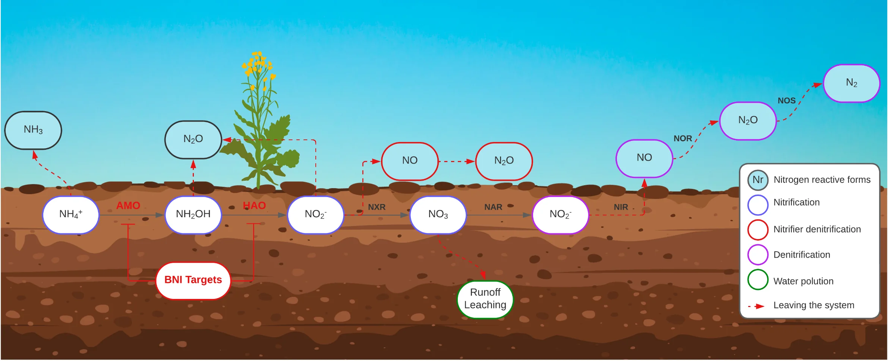

About BNI
Biological Nitrification Inhibition explained in plain language.
What is Biological Nitrification Inhibition?
Biological Nitrification Inhibition (BNI) is the natural ability of certain plants to release compounds from their roots that suppress or regulate nitrification in the soil.
Nitrification is the microbial conversion of ammonium to nitrite and then nitrate. It is a normal part of the nitrogen cycle, but in agricultural soils it can speed up nitrogen losses: nitrate is easily leached into water, and nitrous oxide, a potent greenhouse gas, can be released along the way.
BNI research asks how this plant trait works, which compounds and microbes are involved, and how it could be used in crops and pastures.


Why researchers study BNI
BNI is studied as a way to potentially:
Use nitrogen more efficiently
Improve nitrogen-use efficiency in crop and pasture systems.
Keep nitrogen in the soil
Retain nitrogen in agricultural soils and reduce nitrate leaching.
Reduce emissions
Reduce nitrous oxide emissions and contribute to climate-change mitigation.
Support sustainable systems
Support more sustainable crop and pasture systems.
Reduce reliance on synthetic inhibitors
Offer a biological complement or alternative to synthetic nitrification inhibitors.
Open questions remain
Standard methods, field validation and translation into farming systems are active research areas. That is where early-career researchers are doing much of the work.
Subjects in our network
- Plant–soil–microbe interactions
- Soil microbial ecology
- Ammonia-oxidizing bacteria and archaea
- Root exudates and BNI compounds
- Metabolomics
- Crop and forage screening
- Wheat, maize, sorghum, rice, barley, pasture grasses
- Greenhouse-gas emissions
- Nitrogen-use efficiency
- Soil biogeochemistry
- Plant breeding and genetics
- Field validation
- Modelling and ex-ante assessment
- Translating BNI traits into agricultural systems
Looking for papers or protocols? See the Resources page, which members will fill over time.